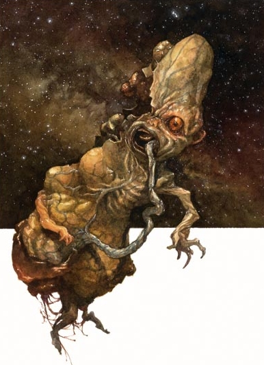

这个无毛生物潮湿、褶皱并肿胀的类人身上顶着一颗过大的脑袋。它的双眼空灵如玻璃一般。它有着过于瘦削的四肢，小小的双手狰狞地扭曲成尖钉状。它的双腿早已萎缩，死物无用地挂在其下。
中型 (不死生物)
生命骰：9d12+9(67hp)
先攻：+6
速度：飞行30尺
防御等级：25(+2敏捷，+8天生，+5偏斜)，接触17，措手不及23
基本攻击/擒抱：+4/+5
攻击：冲撞+6近战(1d8+1)
全力攻击：冲撞+6近战(1d8+1)
面宽/触及：5尺/5尺
特殊攻击：死亡凝视，负能量笼罩，类法术能力
特殊能力：伤害减免10/精金，暗视60�眨�不死生物特性，快速医疗8，邪之优雅，呵斥不死生物5次/天(+5，2d6+14，等级9)
豁免：强韧+7，反射+11，意志+16
属性：力量13，敏捷 15，体质 -，智力 16，感知 22，魅力 20
技能：聆听+11，知识(奥术)+8，知识(宗教)+8，潜行+10，洞察+11
专长：警觉，精通先攻，改善强壮，闪电反射
地域：任意
组织：单独
挑战等级：11
宝物：无
阵营：总是混乱邪恶
进化：10-13HD(中型);14-27HD(大型)
等级调整：-
萎缩者后裔是死去的神的凡身形态的碎块。当神的死胎作为不死生物降临这个世界，一只强大的神孽便诞生了(译注:见《传奇等级手册》怪物部分)。倘若这个神孽被击败，但却留下一些碎片或抛出的血肉残余，萎缩者后裔便有可能由这些碎片而生。虽然比它那神性的起源弱小得多，但它的力量也足以令人恐惧。
萎缩者后裔是需要小心对付的家伙，一旦它在世上诞生，它便会无情地操纵生物以及不死生物以便能维持自己无生命的存在。
萎缩者后裔掌握通用语，地狱语，深渊语，以及天界语。
一种令灵魂麻木的寒冷飘然而至，一只萎缩者后裔随后到来。这个英勇的生物的生命能量在萎缩者后裔邪恶的笼罩下被压制，随后它的生命力被湮灭。有时它仅靠自己的存在无法杀死某些敌人，这时它便使用它的类法术能力和致命的凝视。
死亡凝视 (Su):死亡，60�瞻刖叮磺咳图於�DC19，通过无效。豁免DC基于萎缩者后裔的魅力加值。任何被凝视杀死的生物在24小时后转化为尸妖。
负能量笼罩 (Su):60�瞻刖兜母耗芰苛�罩环绕于萎缩者后裔周身。任意身在其中的不死生物(包括萎缩者后裔自己)获得+4超度抗力和每轮5点生命回复。任何身处其中的活物得到2个负等级，除非它们有某种类似于防护负能量或防护邪恶的力量保护着。任何小于2HD的生物在负能量笼罩中无豁免死亡(并且若萎缩者后裔愿意，它可在1分钟后将它们转化为听命于自己的尸妖)。
斥责不死生物 (Su)：萎缩者后裔可以斥责或命令不死生物就如同一位和萎缩者后裔HD同等级的牧师。
类法术能力：3/天―操纵死尸，唤起死灵，寒冰锥(DC18)，亵渎术，解除魔法，隐形术，位面传送，询问死者，传送术。施法者等级9。
邪之优雅 (Su)：萎缩者后裔在它一切的豁免检定上加上它的魅力加值，并在防御等级上附加魅力加值作为偏斜加值。